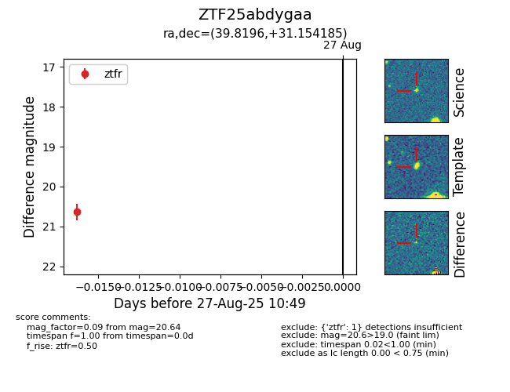

Target ZTF25abdygaa at 2025-08-27 10:49, see:
FINK: fink-portal.org/ZTF25abdygaa
Lasair: lasair-ztf.lsst.ac.uk/objects/ZTF25abdygaa
ALeRCE: alerce.online/object/ZTF25abdygaa
alt names
ZTF25abdygaa (ztf,fink)
coordinates:
equatorial (ra, dec) = (39.8196,+31.15419)
galactic (l, b) = (148.5746,-26.29288)
photometry
last ztfr=20.64
1 ztfr detections
